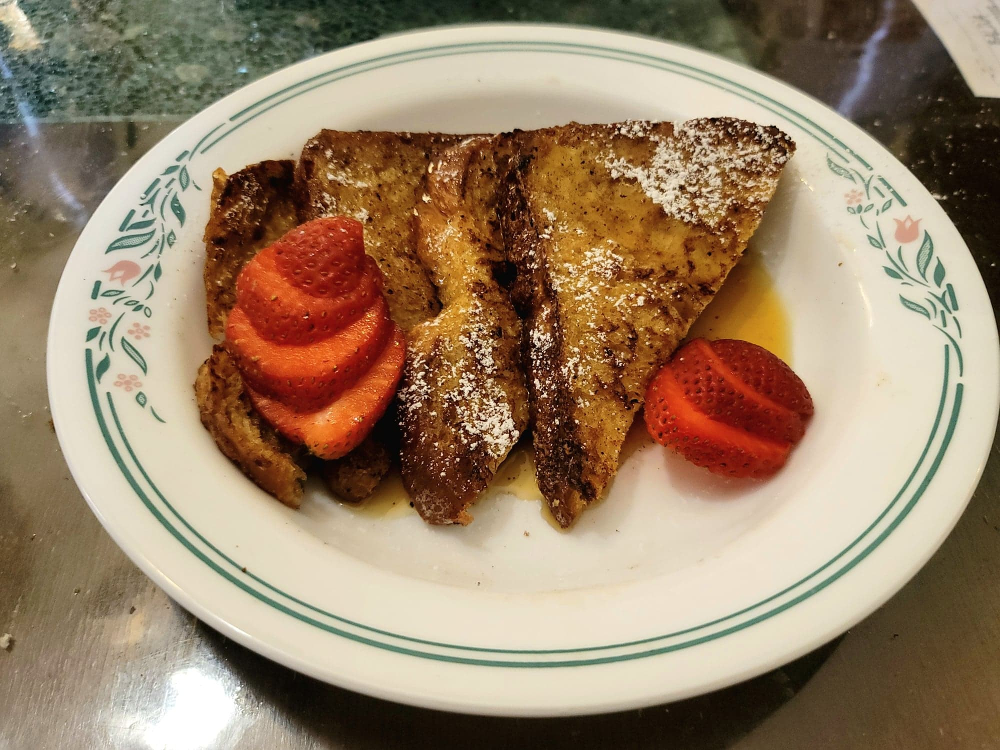

French Toast

Ingredients:
Batter:
- 2 Large eggs
- 3/4 cup Milk
- 1 tsp Sugar
- Optional: 1 tsp Vanilla extract
- Optional: 1 tsp Cinnamon
French Toast:
- 6 slices Brioche
- Butter, for frying
- Optional: Powdered sugar
- Optional: Maple syrup
- Optional: Fresh fruit
Instructions:
- Whisk together the eggs, milk, sugar, vanilla, and cinnamon into a shallow bowl.
- Heat 2 tablespoons butter in a pan over medium/medium-low. Dip both sides of a slice of brioche into the egg mixture until completely coated. Then transfer it to the pan and cook until both sides are golden brown, 2-5 minutes per side. Repeat for all the bread slices, adding more butter to the pan as needed. Serve hot, dusted with powdered sugar, and with maple syrup and fresh fruit.